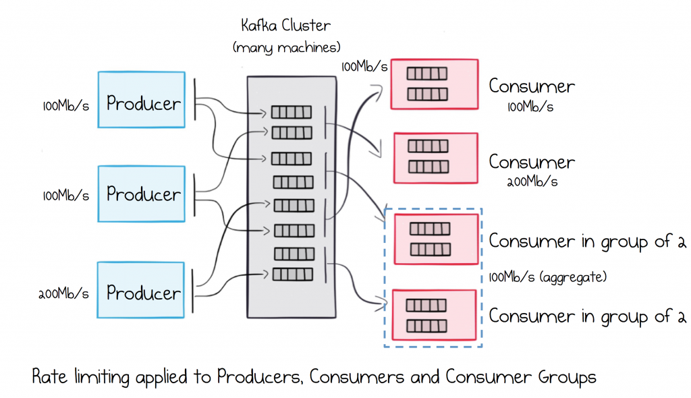
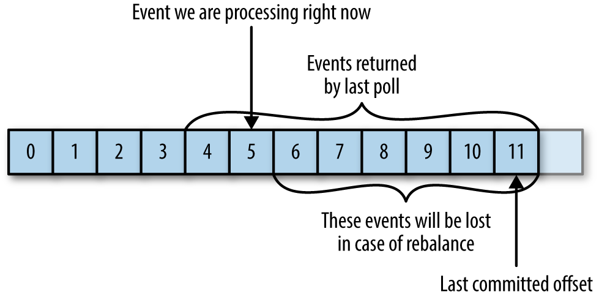
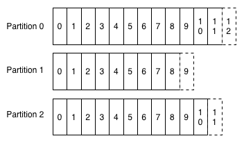
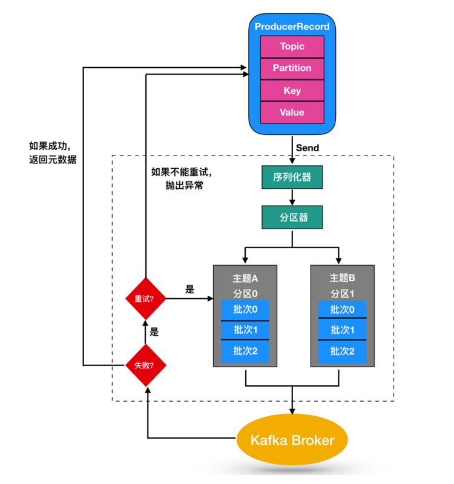
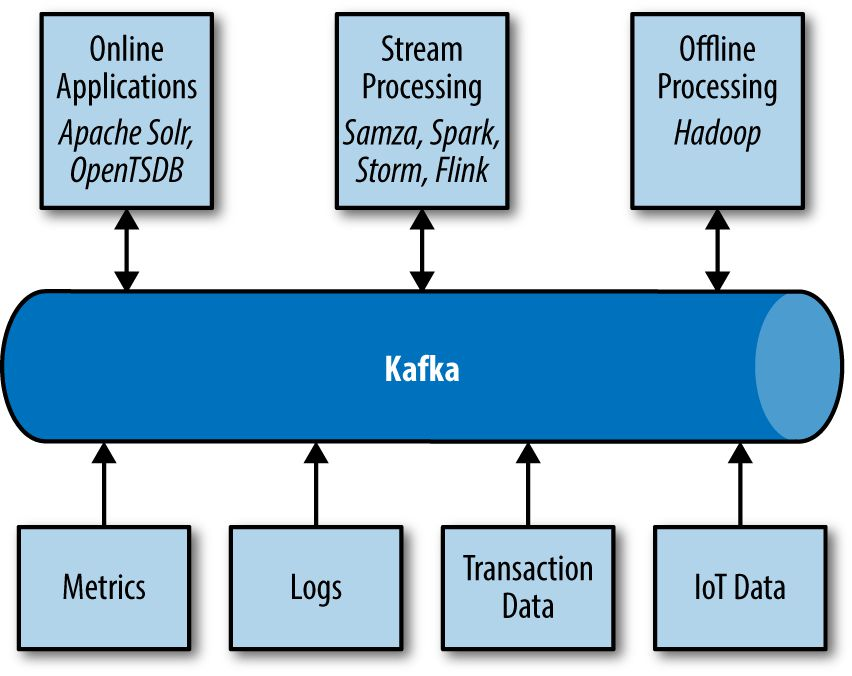
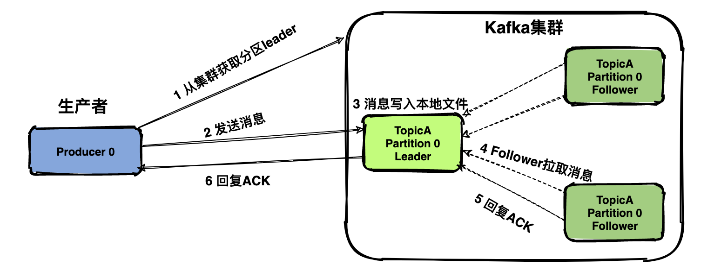

Kafka是为了解决
系统，可以处理多种数据类型，并能够实时提供纯净且结构化的用户活动数据和系统度量指标。
数据为我们所做的每一件事都提供了动力。—— Jeff Weiner, LinkedIn CEO
一、基础环境搭建（可选）
手动安装
Kafka 依赖于 Zookeeper 的分布式节点选举功能，安装 Kafka 需安装 Jdk、Zookeeper、Scala 组件。(Kafka 正在逐渐削弱对 Zookeeper 的依赖，逐渐演变为自管理互相发现的模式)
从 Apache 官网中心下载 Zookeeper 组件，然后安装 Zookeeper 环境：
1 | 创建zookeeper的数据目录data |
在安装好 Java 和 Zookeeper 之后就可以进行安装 Kafka 消息中间件，可以从 Apache Kafka 官网下载 kafka 消息中间件，然后进行配置安装。
1 | 创建log目录用于临时存放kafka中间件日志信息 |
搭建好基础环境后对 kafka 消息中间件进行测试，创建新的 topic 并使用 kafka-console-producer 发
送消息。
1 | 使用kafka工具创建topic, 在参数中指定zookeeper的地址、replication-factor复制比例、及分区大小 |
Docker 镜像使用
Kafka 未提供官方的镜像，我们可以使用：confluentinc Kafka 或 wurstmeister Kafka 作为构建镜像使用：
使用时注意，如果不在同一主机中的客户端想要发送或者接收消息从该 Kafka 服务，需将该配置 KAFKA_ADVERTISED_HOST_NAME设为 Docker 主机对外的 IP 地址。具体解释见：kafka-listeners-explained，简而言之：客户端使用消息代理返回的元信息进行消息发送和接收时的连接，这个元信息来源于该配置。
二、broker 和 topic 部分配置参数
broker 端常用配置信息：
1.broker.id：每个 broker 都需要一个标识符，使用 broker.id 来表示，它的默认值为 0 。其可以被设置成任何其它任意整数。这个值在整个 kafka 集群中必须是唯一的。
2.port 以及 zookeeper.connect 配置：kafka 默认是监听 9092 端口，修改 port 配置参数可以将其设置成任意其它可用的端口。若在端口号在 1024 以下，需要使用 root 权限启动 kafka。zookeeper.connect 是配置连接 zookeeper 的配置信息，默认连接 zookeeper 的 2181 端口。若为 zookeeper 集群，则使用,对 zookeeper 进行分割。
3.log.dirs 以及 auto.create.topics.enable 配置：kafka 会将所有消息都保存磁盘上，存放这些日志片段的目录就是通过 log.dirs 指定的，它是一组用逗号分割的本地文件系统路径。若 auto.create.topics.enable 配置值为 true，处于以下三种情况时 kafka 会自动创建主题：当一个生产者开始往主题写入消息时、当一个消费者开始从主体读取消息时、当任意一个客户端向主体发送原
数据时。
4.num.recovert.threads.per.data.dir：kafka 会使用可配置线程池来处理日志片段，默认情况下每个日志目录只使用一个线程，因为这些线程只是在服务器启动和关闭时会用到。在进行恢复时使用并行操作可能会省下数小时的时间，设置此参数需要注意，所配置的数字对应的是log.dirs指定的单个日志目录。
topic 常用配置参数：
1.number.partions：该参数指定了新创建的主题将包含多少个分区，若启用了主题自动创建功能（该功能默认是启用的），主题分区的个数就是该参数指定的值（其默认值为 1 ）。可以增加主题分区的个数，但不能减少分区的个数。Kafka 集群通过分区对主题进行横向扩展，所以当有新的 broker 加入集群时，可以通过分区个数实现集群的负载均衡。
2.log.retention.ms：kafka 通常根据时间来决定数据可以被保留多久，默认使用 log.retention.hours 参数来配置时间，默认值为 168 小时也就是一周。除此之外，还有其他两个参数 log.retention.minutes 和 log.retention.ms，这 3 个参数的作用是一样的，都是决定消息多久以后会被删除。
3.log.retention.bytes：另一种方式是通过保留的消息字节数来判断消息是否过期，它的值通过参数 log.retention.bytes 来指定，作用在每一个分区上。也就是说，如果有一个包含 8 个分区的主题，并且 log.retention.bytes 被设置为1GB，那么这个主题最多可以保留8GB的数据。当主题分区个数增加时，整个主题可以保留的数据也随之增加。
4.log.segment.bytes：当消息到达 broker 时，它们被追加到分区的当前日志片段上。当日志片段大小达到 log.segment.bytes 指定的上限时，当前日志片段就会被关闭，一个新的日志片段被打开，前一个日志片段等待过期（其默认过期时间为 10 天）。
5.log.segment.ms：另一个可以控制日志片段关闭时间的是 log.segment.ms，它指定过了多长时间之后日志片段就被关闭，log.segment.bytes 和 log.segment.ms 这两个参数之间不存在互斥问题，日志片段会在大小或时间达到上限时被关闭，就看哪个条件先得到满足。
6.message.max.bytes：broker 通过设置 message.max.bytes 参数来限制单个消息的大小，默认值是 1MB。若生产者尝试发送的消息超过这个大小，不仅消息不会被接收还会返回 broker 返回的错误消息。在消费者客户端设置的 fetch.message.max.bytes 必须与服务器设置的消息大小进行协调，如果这个值比 message.max.bytes 小，那么消费者就无法消费 比较大的消息。
三、Kafka 基础术语：
kafka 的数据单元称为消息 (Message)，与数据库里的一个"数据行"或者一条“记录”类似，为了提高效率消息被分批写入 kafka，批次就是一组消息（使用单独线程处理）。

kafka 的消息通过 topic（主题）进行分类，主题好比数据库中的表。topic 可以被分为若干分区，一个分区就是一个提交日志。消息以追加的方式写入分区，然后以先入先出的顺序读取。由于一个主题一般包含几个分区，因此无法在整个主题范围内保证消息的顺序，但可以保证在单个分区的顺序。
kafka broker 是如何持久化数据的？总的来说，kafka 使用消息日志（log）来保存数据的，一个日志就是磁盘上一个只能追加（append only）消息的物理文件。因为只能追加写入，故避免了缓慢的随机 I/O 操作，改为性能更好的顺序 I/O 操作，这也是实现kafka 高吞吐量特性的一个重要手段。为了避免日志写满磁盘空间，kafka 必然要定期地删除消息以回收磁盘。其通过 log segment 机制，在 kafka 底层一个日志又近一步细分成多个日志片段，消息被追加写到当前新的日志段中。kafka 在后台通过定时任务会定期检查老的日志段是否能够被删除，从而实现回收磁盘空间的目的。

kafka 中分区机制指的是将每个主题划分多个分区（partition），每个分区是一组有序的消息日志。也就是说如果向一个双分区的主题发送一条消息，这条消息要么在分区 0 中，要么在分区 1 中。

offset 消费者位移：每个消费者在消费消息的过程中必然需要有个字段记录它当前消费到了分区的哪个位置上，这个字段就是消费者位移（consumer offset）。上面的位移表示的是分区内的消息位置，它是不变的，即一旦消息被成功写入到一个分区上，它的位移值就固定了。而消费者位移则会随着消息消费而发生变化，毕竟它是消费者消费进度的指示器。另外每个消费者都有着自己的消费者位移，因此一定要区分这两类位移的区别。
kafka 消费者会往一个叫做 _consumer_offset 的特殊主题发送消息，消息里包含每个分区的偏移量。在发生 rebalance 之后，为了能够继续之前的工作，消费者需要读取每一个分区最后一次提交的偏移量，然后从偏移量指定的地方继续处理。当提交 commit 的偏移量小于客户端处理的最后一条消息的偏移量，消息会被重新处理导致重复。若提交的偏移量大于客户端处理的最后一个消息的偏移量，那么处于两个偏移量之间的消息将会丢失。
四、kafka 整合 confluent.io schema registry
使用 apache avro 实现在生产者与消费者中对消息内容进行序列化与反序列化，Avro 是一种与编程语言无关的序列化格式。Doug Cutting 创建了这个项目，目的是提供一种共享数据文件的方式。
Avro 数据通过与语言无关的 schema 来定义，schema 通过 JSON 来描述，数据被序列化为二进制或者 JSON 文件，不过一般会使用二进制文件。Avro 在读写文件时需要用到 schema，schema 一般会被内嵌在数据文件里。Avro 有一个很有意思的特性是，当负责写消息的应用程序使用了新的 schema，负责读消息的应用程序可以继续处理消息而无须做任何改动，这个特性使得它特别适合用在像 kafka 这样的消息系统上。
confluent 在其共有平台发布了 confluent schema registry 工具，作为注册表 schema 的实现。可以从 https://www.confluent.io/download/ 进行下载，之后在服务器上启动 schema registry 服务。
1 | sam@elementoryos: ~/kafka_schema_registry/confluent-tools-kafka$ bin/schema-registry-start |
然后将需要进行序列化实体的 schema 注册到 schema registry 中，最终其会返回一个 id 表示注册成功。
1 | sam@elementoryos: curl -X POST -H "Content-Type:application/vnd.schemaregistry.v1+json" --data |
注册完成后，就可以分别在生产者和消费者的代码示例中使用 avro 进行序列化对象。同时在生产者和消费者的 properties 指定属性 kafkaProperties.put("schema.registry.url", "http://192.168.170.130:8081")。
五、kafka 生产者—向 kafka 写入数据
向 kafka 发送数据从创建 ProducerRecord 对象开始，其包含目标主题、要发送的内容，还可以指定键或分区。在发 ProducerRecord 对象时，生产者要把键和值对象序列化成字节数组，这样其就可以在网络上传输。
接下来，将数据传给分区器。如果之前在 ProducerRecord 对象中指定了分区，那么分区器不会做任何事情，直接把指定的分区返回。若没有指定分区，那么分区器会根据 ProducerRecord 对象的键来选择一个分区。选好分区后，生产者就知道该往哪个主体和分区发送这条记录了。紧接着，这条记录会被添加到一个记录批次里，这个批次里的所有消息被发送到相同的主题和分区上。有一个单独的线程负责把
这些记录批次发送到相应的 broker 上。
服务器在收到这些消息时会返回一个响应，如果消息成功写入 kafka，就返回一个 RecordMetaData 对象，它包含了主题和分区信息，以及记录在分区里的偏移量。如果写入失败，则会返回一个错误，生产者在收到错误之后会尝试重新发送消息，几次之后如果还是失败，就返回错误信息。

六、kafka 消费者—从 kafka 读取数据
kakfa 消费者从属于消费者群组，一个群组里的消费者订阅的是同一个主题，每个消费者接收主题一部分分区的消息。若消费者组中消费者的数量与主题分区的数量相等，则每一个消费者单独消费一个分区。当消费者组中消费者数量大于主题分区的数量，多余的消费者不会被分配到任何数据分区。引入消费者组的概念主要是为了提升消费者端的吞吐量。多个消费者实例同时消费，加速整个消费端的吞吐量
（TPS）。消费者组里面的所有消费者实例不仅"瓜分"订阅主体的数据，而且更酷的是它们还能彼此协助。
Rebalance 概念：群组中的消费者共同读取主题的分区，一个新的消费者加入群组时，它读取的是原本由其他消费者读取的消息。当一个消费者被关闭或发生崩溃时，它就离开群组，原本由它读取的分区将由群组里的其它消费者来读取。分区的所有权从一个消费者转移到另一个消费者，这样的行为被称为再均衡，在 rebalance 时会产生 stop the world 的问题。
kafka 检测方式：消费者通过向被指派为群组协调器的 broker（不同的群组可以有不同的协调器）发送心跳来维持他们和群组的从属关系。只要消费者以正常的时间发送心跳，就被认为是活跃的，说明它还在读分区里的消息。如果消费者停止发送心跳的时间足够长，会话就会过期，群组协调器认为它已经死亡，就会触发一次再均衡。
分配分区的过程：当消费者要加入群组时，它会向群组协调器发送一个 JoinGroup 的请求。第一个加入群组的消费者将成为“群主”。群主从协调器那里获得群组的成员列表（列表中包含了所有最近发送过心跳的消费者，它们被认为是活跃的），并负责给每一个消费者分配分区。它使用了一个实现了 PartitionAssign 接口的类来决定哪些分区应该被分配给哪个消费者。
1 | private Map<TopicPartition, OffsetAndMetadata> currentOffsets = new HashMap<>(); |
提交特定的偏移量调用的是 commitAsync()，不过调用 commitSync() 也是完全可以的。当然，在提交特定偏移量时，仍然要处理可能发生的错误。
kafka 的再均衡监听器：消费者在退出和进行分区再均衡之前，会做一些清理工作。需要在消费者失去对一个分区的所有权之前提交最后一个已处理记录的偏移量。如果消费者准备了一个缓冲区用于处理偶发的事件，那么在失去分区所有权之前，需要处理在缓冲区累积下来的记录。你可能还需要关闭文件句柄、数据库连接等。
ConsumerRebalanceListener 有两个需要实现的方法：
1 ）public void onPartitionRevoked(Collection<TopicPartition> partitions) 方法会在再均衡开始之前和消费者停止读取消息之后被调用。如果在这里提交偏移量，下一个接管分区的消费者就知道该从哪里开始读取了。
2 ）public void onPartitionsAssigned(Collection<TopicPartition> partitions) 方法会在重新分配分区之后和消费者开始读取消息之前被调用。
1 | // 在consumer订阅主体topic时设定回调类HandleRebalance |
从特定偏移量处开始处理记录：使用 poll() 方法从各个分区的最新偏移量处开始处理消息，有时候我们也需要从特定的偏移量处开始读取消息。seekToBeginning(Collection<TopicPartition> tp) 和 seekToEnd(Collection<TopicPartition> tp) 这两个方法。若循环运行在主线程中，可以在 ShutdownHook 里调用该方法，需记住 consumer.wakeup() 是消费者唯一一个可以从其他线程里安全调用的方法。调用 consumer.wakeup() 可以退出 poll() 并抛出 WakeupException 异常，或者如果调用 consumer.wakeup() 时线程没有等待轮询，那么异常将在下一轮 poll() 时抛出。
1 | Runtime.getRuntime().addShutdownHook(new Thread() { |
七、深入理解kafka运行机制
kafka 使用 zookeeper 来维护集群成员的信息，每个 broker 都有一个唯一标识符，这个标识符可以在配置文件中指定，也可以自动生成。在 broker 启动时，它通过创建临时节点把自己的 id 注册到 zookeeper 上。控制器 controller 机制：控制器负责分区首领的选举，集群里第一个启动的 broker 通过在 zookeeper 里创建一个临时节点 controller 让自己成为控制器。当其它的 broker 进行创建时，会收到一个"节点已存在"的异常，然后"意识"到控制器节点已存在，也就是说集群里已经有一个控制器了（结合 zookeeper 进行结点选举）。
kafka中复制是如何进行实现的？
kafka 使用主题来组织数据，每个主题被分为若干个分区，每个分区有多个副本。那些副本被保存在 broker 上，每个 broker 可以保存成百上千个属于不同主题和分区的副本。副本分为两种类型：首领 (master) 副本，为保持一致性，kafka 中所有生产者请求和消费者请求都会经过这个副本。跟随者 (follower) 副本，其主要是从 master 复制消息并与 master 上内容保持一致，若 master 节点崩溃，参与节点选举并提升为新首领（follower 副本不参与读、写）。
与 master 的同步实现：follower 为了与首领同步，向首领发送获取数据的请求，master 通过查看每个 follower 请求的最新偏移量，就可以知道每个跟随者复制的进度。如果跟随者在 10s 内没有请求任何消息，或者虽然在请求消息，但在 10s 内没有请求最新的数据，那么它就会被认为是不同步的。跟随者的正常不活跃时间或在成为不同步副本之前的时间是通过 replica.lag.time.max.ms 参数来配置
的。
kafka是如何处理来自生产者和消费者的请求？
生产请求和获取请求都必须发送给分区的首领副本，客户端使用元数据请求包含了客户端感兴趣的主题列表。服务器端的响应中指明了这些主题所包含的分区、每个分区都有哪些副本、以及哪个副本是 master 节点。客户端一般会缓存这些信息，并直接往目标 broker 上发送请求和获取请求（时间间隔通过 metadata.max.age.ms 来配置）。
在生产者配置中存在 acks 这个配置参数——该参数指定了需要多少个 broker 确认才可以认为一个消息写入是成功的，acks=all 需要所有 broker 收到消息才会成功；acks=0 意味着生产者在把消息发出去之后，完全不需要等待 broker 的响应。
客户端发送消费请求时向 broker 获取主题分区里具有特定偏移量的消息，客户端还可以指定为 broker 返回的数据分配足够的内存。否则， broker 返回的大量数据有可能耗尽客户端的内存。
kafka的存储细节，如文件格式和索引？
kafka 的基本存储单元是分区，分区无法在多个 broker 间进行再细分，也无法在同一个 broker 的多个磁盘上进行再细分。在配置 kafka 时候，管理员指定了一个用于存储分区的目录清单——也就是 log.dirs 参数的值，该参数一般会包含每个挂载点的目录。
文件管理部分，kafka 管理员为每个主题配置了数据保留期限，规定数据被删除之前可以保留多长时间，或者清理数据之前可以保留的数据量大小。通常分区被分成若干个片段，默认情况下，每个片段包含 1GB 或一周的数据，以较小的那个为准。在 broker 往分区写入数据时，如果达到片段上限，就关闭当前文件，并打开一个新文件。当前正在写入数据非片段叫作活跃片段，活动片段永远不会被删除。
消息和偏移量保存在文件里，其格式除了键、值和偏移量外，消息里还包含了消息大小、校验和、消息格式版本号、压缩算法（Zstd、Snappy、GZip 或 LZ4）和时间戳。时间戳可以是生产者发送消息的时间，也可以是消息到达 broker 的时间，可以配置。为了能快速从任意可用偏移量位置开始读取消息，kafka 为每个分区维护了一个索引，索引把偏移量映射到片段文件和偏移量在文件里的位置。
清理工作原理：若 kafka 启动时启用了清理功能（通过配置 log.cleaner.enabled 参数），每个 broker 会启动一个清理管理器线程或多个清理线程，它们负责执行清理任务，清理掉键重复的只保留一条，或清理 value 为空的消息等。这个线程会选择污浊率（污浊消息占分区总大小的比例）较高的分区进行清理。
为了清理分区，清理线程会读取分区的污浊部分，并在内存里创建一个 map。map 里的每个元素包含了消息键的散列值和消息的偏移量，键的散列值是 16B，加上偏移量总共是 24B。如果要清理一个 1GB 的日志偏移量，并假设每个消息大小为 1KB，那么这个片段就包含一百万个消息，而我们只需要 24MB 的 map 就可以清理这个片段（若有重复的键，可以重用散列项，从而使用更少的内存）。
八、常见问题
为什么选择 Kafka？
有很多发布/订阅的消息系统，为什么我们要选择 Kafka？
多生产者
Kafka 能够无缝地处理多个生产者，而不用管客户端是否使用多个主题或同一主题。 这使得系统非常适合从许多前端系统聚合数据并使其保持一致。例如，一个通过许多微服务为用户提供内容的网站可以拥有一个页面视图主题，所有服务都可以使用通用格式写入该页面视图，然后，消费者应用程序可以为站点上的所有应用程序接收单个页面视图，而无需从每个应用程序多个主题协调消费。
多消费者
除了多种生产商之外，Kafka 还专为多个消费者设计，以读取任何单一的消息流而不会互相干扰。这与许多队列系统相反，其中一旦消息由一个客户端消费，其它客户端将不可消费。多个 Kafka 消费者可以选择作为消费组的一部分运行并共享流，确保整个组仅处理给定消息一次。
基于文件的保留
Kafka 不仅可以处理多个消费者，而且持久（Durable）的消息保留意味着消费者并不总是需要实时工作。 消息已提交给磁盘，并将按可配置的保留规则保留数据。可以在每个主题的基础上选择这些选项，允许根据消费者需求进行不同的消息流，以具有不同的保留量。持久（Durable）的保留意味着如果消费者落后，由于处理缓慢或处理中出问题，则没有丢失数据的危险。这也意味着可以在消费者身上进行维护，在短时间内离线应用程序，不用担心备份生产者或丢失的消息。消费者可以停止，并且消息将保留在 Kafka。 这允许它们重新启动并拾取它们离开的处理消息，而无需担心数据丢失。
Durable 一般在消息队列中指主题（Topic）订阅本身的持久化，如果订阅是持久的，即使消费者断开消费，订阅也会存在，到重新连接时将选择从丢失处继续消费。相反非持久化订阅在断开时该订阅将不存在。
Persistent 一般指将消息从内存持久化到硬盘。
扩展性
Kafka 的灵活可伸缩性使其易于处理任何数量的数据。 用户可以以单个代理作为概念证明，扩展到三个代理的小型开发集群，随着时间的推移和数据的增长而增加一组或甚至数百个代理，并逐渐走向真实的生产环境。 集群在线时可以执行扩展，不会影响整个系统的可用性。 这也意味着多个代理集群可以接管单个代理的故障，并继续服务客户。需要容忍更多同时故障的集群可以配置更高的复制因子。
高性能
所有这些功能都汇集在一起，使 Apache Kafka 成为发布/订阅消息系统，在高负载下具有出色的性能。生产者，消费者和代理都可以水平扩展，以便轻松处理非常大的信息流，在提供高可用的同时也保证了低延迟的消息传递。
Kafka 适合什么样的使用场景？
消息代理
Kafka 可以很好地替代传统消息代理。消息代理的使用有多种原因（将消费处理与数据生产者分离，缓冲未处理的消息等）。与大多数消息系统相比，Kafka 具有更好的吞吐量，内置的分区，复制和容错能力，这使其成为大规模消息处理应用程序的理想解决方案。
根据我们的经验，消息传递的使用通常吞吐量较低，但是可能需要较低的端到端延迟，并且通常取决于 Kafka 提供的强大的持久性保证。
在这个领域，Kafka 可以与传统的消息传递系统（例如 ActiveMQ 或 RabbitMQ）相提并论。
网站活动跟踪
Kafka 最初的用例是能够将用户活动跟踪管道重建为一组实时的发布-订阅供给。这意味着将网站活动（页面浏览量，搜索或用户可能采取的其他操作）发布到中心主题，每种活动类型只有一个主题。这些供给可用于一系列用例的订阅，包括实时处理，实时监控，以及加载到 Hadoop 或脱机数据仓库系统中以进行脱机处理和报告。
活动跟踪通常量很大，因为每个用户页面视图都会生成许多活动消息。
指标（Metrics）
Kafka 通常用于操作监控数据。这涉及汇总来自分布式应用程序的统计信息，以生成集中的操作数据提要。
日志聚合
许多人使用 Kafka 替代日志聚合解决方案。日志聚合通常从服务器收集物理日志文件，并将它们放在中央位置（也许是文件服务器或 HDFS）以进行处理。Kafka 提取了文件的详细信息，并将日志或事件数据作为消息流进行了更清晰的抽象。这允许较低延迟的处理，并更容易支持多个数据源和分布式数据消费。与以日志为中心的系统（例如 Scribe 或 Flume）相比，Kafka 具有同样出色的性能，由于复制而提供的更强的持久性保证以及更低的端到端延迟。
流处理
Kafka 的很多用户使用多个阶段组成的处理管道处理数据，从 Kafka 主题中消费原始输入数据，然后将其聚合，增强或以其他方式转换为新主题，以供进一步消费或后续处理。例如，用于推荐新闻文章的处理管道可能会从 RSS 供给中检索文章内容，并将其发布到“文章”主题中。进一步的处理可能会使该内容规范化或删除重复数据，并将清洗后的文章内容发布到新主题中；最后的处理阶段可能会尝试向用户推荐此内容。这样的处理管道基于各个主题创建实时数据流的图形。从 0.10.0.0 开始，Apache Kafka 中提供了一个轻量但功能强大的流处理库，称为 Kafka Streams，可以执行上述数据处理。除了 Kafka Streams，替代的开源流处理工具包括 Apache Storm 和 Apache Samza。
事件溯源（Event Sourcing）
事件溯源是应用程序设计的一种样式，其中状态更改以时间顺序的记录序列记录下来。 Kafka 对非常大的存储日志数据的支持使其成为使用这种样式构建的应用程序的绝佳后端。
提交日志（Commit Log）
Kafka 可以用作分布式系统的一种外部提交日志。该日志有助于在节点之间复制数据，并充当故障节点恢复其数据的重新同步机制。Kafka 中的日志压缩功能有助于支持此用法。在这种用法中，Kafka 类似于 Apache BookKeeper 项目。
如何保证消息顺序？
Kafka 可以保证同一个分区里的消息是有序的。也就是说，如果生产者按照一定的顺序发送消息，broker 就会按照这个顺序把它们写入分区，消费者也会按照同样的顺序读取它们。
使用单个分区能最大程度保证消息的顺序，或者消息使用相同的 key。还需注意下面的配置。
生产者
retries ：生产者从服务器收到错误时的重试次数
max.in.flight.requests.per.connection ：生产者在收到服务器响应之前可以发送多少个批次消息。值越高，占用越多内存，吞吐量提升。
消息是否写入成功也是非常关键的，如果把 retries 设为非零整数，同时把 max.in.flight.requests.per.connection 设为比 1 大的数，那么第一批消息写入失败，而第二批写入成功，broker 重试第一个批次。此时第一个批次写入成功，那么两个批次的顺序就反了。
为了保证写入的顺序，不建议把 retries 设为 0。可以把 max.in.flight.requests.per.connection 设为 1 ，这样在生产者尝试发送第一批消息时，就不会有其他的消息发送给 broker。不过这样的会严重影响生产者的吞吐量，所以只有在对消息的顺序有严格要求的情况下。
如何保证消息被消费 Exactly-Once
由于各种故障，消息传递系统无法保证生产者和使用者应用程序之间的消息传递。根据客户端应用程序与此类系统交互的方式，可能会出现以下消息语义：
- 如果消息传递系统永远不会复制消息，但可能会漏掉偶尔的消息，则我们称 最多一次 (at-most-once)
- 如果它永远不会丢失一条消息，但可能会重复一条消息，则我们至少将其 至少一次 (at-least-once)**
- 如果它发送所有消息时总是不重复，那将是 恰好一次 (exactly-once) 要保证消息只发送一次，得保证生产者发送给服务器的消息只成功一次，消费者也只消费一次。Kafka 代理和客户端应用引入事物可确保进行一次准确的交付。
生产者

acks ：该参数指定了必须要有多少个分区副本收到消息，生产者才会认为消息写入是成功的。这个参数对消息丢失的可能性有影响。
acks=0不需要确认acks=1需要集群首领确认。首领确认纪录后失败，如果跟随者还没复制，则记录可能丢失。acks=all集群首领及其追随者都确认后，才会收到成功响应。安全性更高，吞吐率下降。enable.idempotence：当设置为 “true” 时，生产者将确保每个消息的仅有一个副本被写入流中。如果为 “false”，则生产者由于代理失败等原因而重试，可能会将重试消息的副本写入流中。 请注意，启用幂等性要求max.in.flight.requests.per.connection小于或等于 5，重试大于 0，ack必须为 “all”。 如果用户未明确设置这些值，则将选择合适的值。 如果设置了不兼容的值，则将引发 ConfigException。
幂等操作
由于生产者出错重试会导致消息重复，所以为了生产者成功提交的消息恰好一次，可以使用幂等操作来保证。如果发生导致生产者重试的错误，则相同的消息（仍由生产者多次发送）将仅写入到代理上的 Kafka 日志一次。对于单个分区，幂等生产者发送消除了由于生产者或代理错误而产生重复消息的可能性。要启用此功能并为每个分区获取一次精确的语义（即没有重复，没有数据丢失和有序的语义），请将生产者配置为 enable.idempotence = true 。
事物
生产者通过设定事物 Id ( transactional.id )，然后开启事物。
消费者
事物
isolation.level ：控制如何读取事务写入的消息。如果设置为 read_committed ，consumer.poll() 将仅返回已提交的事务性消息。如果设置为 read_uncommitted （ 默认 ），consumer.poll() 将返回所有消息，甚至是已中止的事务性消息。非事务性消息在两种方式下都返回。
手动提交
enable.auto.commit ：该属性决定是否自动提交偏移量，默认为 true。为了避免数据出现重复和丢失，可以通过手动提交的方式自行提交偏移量。
是什么使 Kafka 如此之快
低延迟消息传递
Kafka 通过顺序 IO 操作日志避免了长时间的磁盘寻道；
零复制原则，避免了内核上下文和应用上下文的文件读取和发送，直接在系统内核上下文中进行文件读取和发送，避免了上下文切换的时间消耗和内存占用。
传统数据复制方法

零复制使用 java.nio.channels.FileChannel.transferTo()

批处理数据和压缩
通过批量读写来优化吞吐量，并将同一批次的消息高效压缩在一起传输，在日志中也同样保持压缩，仅由使用者解压缩。支持的压缩算法：Zstd、Snappy、GZip 或 LZ4。
水平扩展
首先让我们了解什么是垂直扩展。可以说，对于传统的数据库服务器，当负载增加时，一种解决方法是添加更多资源，例如：CPU，RAM，SSD 等。这称为垂直扩展。它具有以下几个缺点：
- 每个硬件都有局限性，不能无限地向上扩展。
- 如果机器出现故障怎么办？通常需要停机。
水平扩展通过添加更多机器来解决相同的问题。 Kafka 能够为单个主题提供数千个分区，并将其分布在数千台计算机中，这意味着 Kafka 可以处理巨大的负载。
九、开源监控工具
CMAK(Cluster Manager for Apache Kafka, previously known as Kafka Manager)
分类：WEB UI 服务
特性：可管理集群、监控集群状态（主题、消费者、偏移量、消息代理、复制副本、分区副本）、运行首选副本选举、创建/删除/修改主题及分区、分区主题重新分配、JMX 监控…
kafdrop
分类：WEB UI 服务
特性：查看 Kafka 代理（主题和分区分配以及控制器状态）、查看主题（分区数，复制状态和自定义配置）、查看消息（JSON，纯文本和 Avro 编码）、查看消费者分组（每个分区的消费偏移量，合并和每个分区的滞后）、创建新主题、查看 ACLs…
Kafka Tool
分类：GUI 应用
特性：快速查看所有 Kafka 集群，包括其代理，主题和消费者、查看分区中消息的内容并支持添加新消息、查看消费者的偏移量、支持 JSON 和 XML 等格式显示消息、添加和删除主题以及其他管理功能、将单个消息从您的分区保存到本地硬盘驱动器、Kafka Tool 可在Windows，Linux 和 Mac OS 上运行